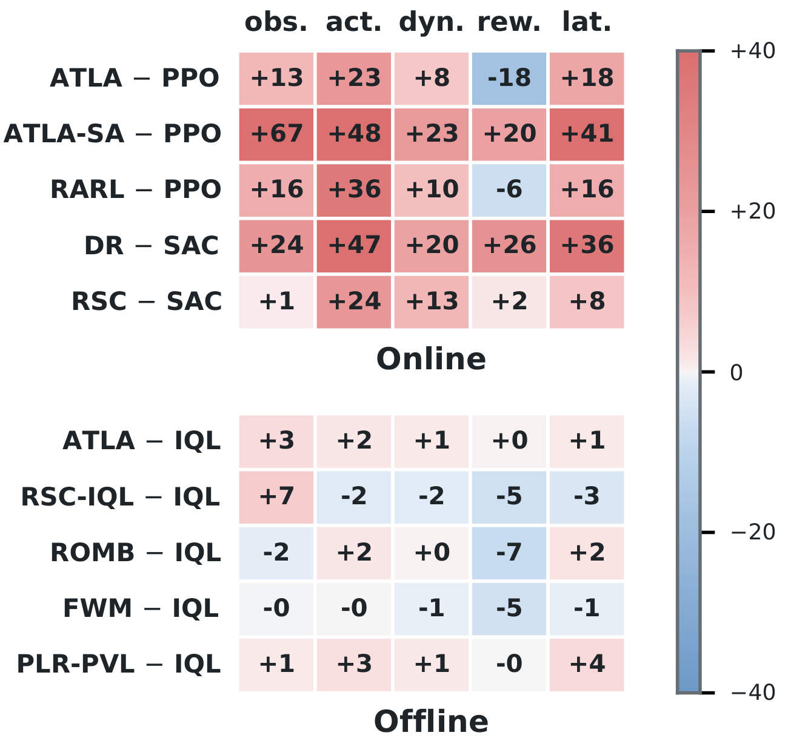
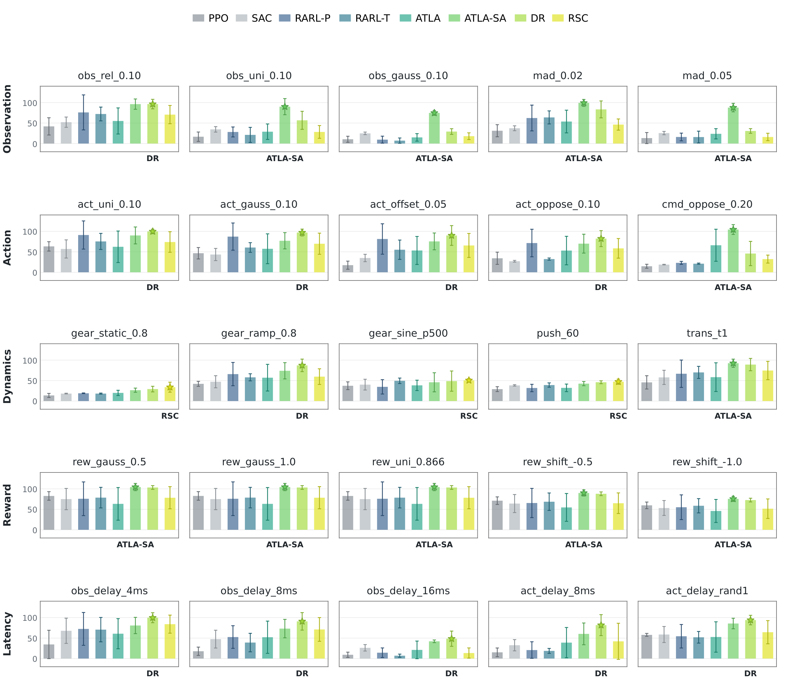
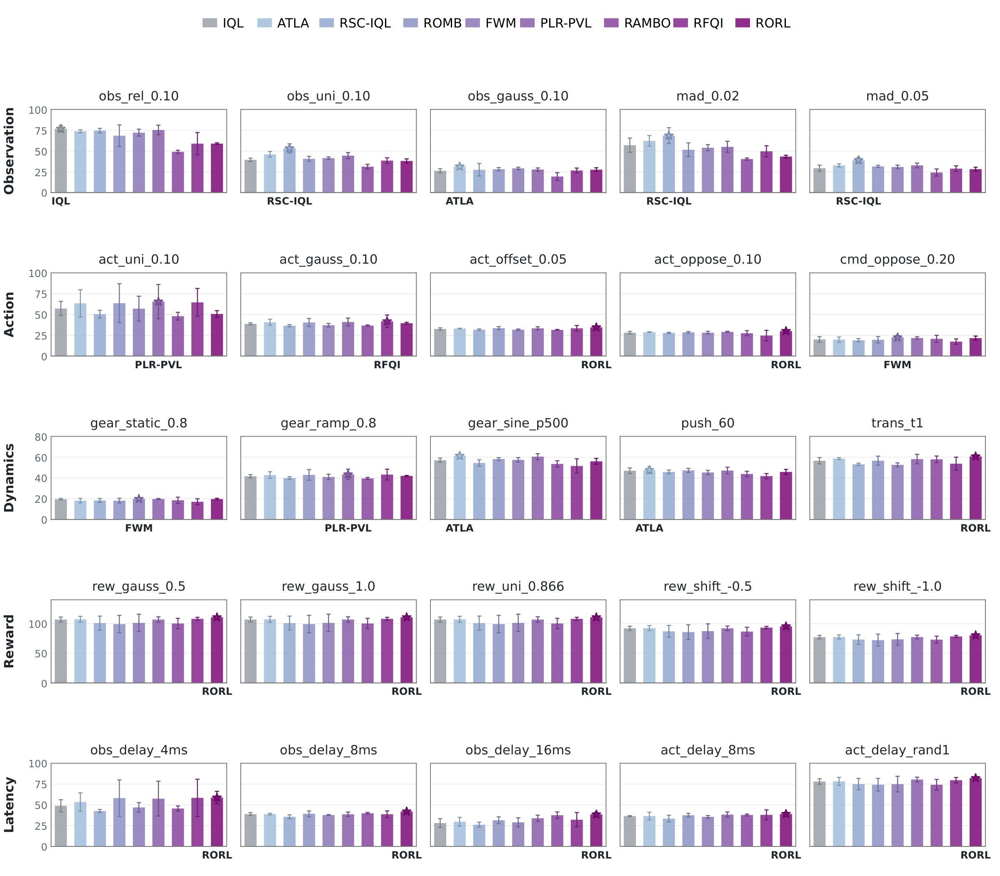

Every method is evaluated on the same 50 isolated configurations: five shift sources (observation, action, dynamics, reward and execution latency) with five conditions each, online and offline. Every shift is applied to a frozen policy. Under the reward shift the policy acts in the nominal environment and the reward recorded for its episode is corrupted, by Gaussian noise, uniform noise or a constant shift.
Claimed channels do not fully predict empirical strengths. Figure 1 shows DR-SAC leads both dynamics and execution latency, while ATLA-SA-PPO leads observation, action and reward; offline leaders vary across shift channels. A method's intended target therefore does not uniquely determine where it performs best. The measured ranking is also conditional on the task, mode and severity used to instantiate each shift.

Online methods gain over their base algorithm; offline methods stay close to it. Every online method improves over its base algorithm on most shift sources. Offline, robust methods stay close to their base algorithm.


Each condition is evaluated online and offline, which gives the 50 configurations. All of them are applied to the frozen policy on Hopper; a control step is 8 ms.
| Shift source | Condition | Mode | Setting |
|---|---|---|---|
| Observation | obs_rel_0.10 | stochastic, per step | Gaussian at 0.10 σi, σi the dimension's own std |
| Observation | obs_uni_0.10 | stochastic, per step | U[−0.10, 0.10] |
| Observation | obs_gauss_0.10 | stochastic, per step | σ = 0.10 |
| Observation | mad_0.02 | adversarial, per step | ten-step PGD in an ℓ∞ ball of radius 0.02 maximising the change of the action |
| Observation | mad_0.05 | adversarial, per step | as above, radius 0.05 |
| Action | act_uni_0.10 | stochastic, per step | U[−0.10, 0.10] on the clipped action |
| Action | act_gauss_0.10 | stochastic, per step | σ = 0.10 on the clipped action |
| Action | act_offset_0.05 | static bias | +0.05 on every actuator |
| Action | act_oppose_0.10 | adversarial, per step | ε = 0.10 against the action just chosen |
| Action | cmd_oppose_0.20 | adversarial, per step | ε = 0.20, applied to the command before clipping |
| Dynamics | gear_static_0.8 | static parametric | actuator gear × 0.8 for the whole episode |
| Dynamics | gear_ramp_0.8 | non-stationary | gear 1.0 → 0.8, linear over 1000 steps |
| Dynamics | gear_sine_p500 | non-stationary | gear cycling in [0.8, 1.2], period 500 steps |
| Dynamics | push_60 | event-driven | 60 N on the torso, 12 steps every 250, sign random |
| Dynamics | trans_t1 | stochastic kernel | state noise σq = 10−3, σv = 10−2 per step |
| Reward | rew_gauss_0.5 | stochastic, per step | recorded reward + N(0, 0.52) |
| Reward | rew_gauss_1.0 | stochastic, per step | recorded reward + N(0, 1.02) |
| Reward | rew_uni_0.866 | stochastic, per step | recorded reward + U[−0.866, 0.866] (std 0.5) |
| Reward | rew_shift_-0.5 | parametric | recorded reward −0.5 at every step |
| Reward | rew_shift_-1.0 | parametric | recorded reward −1.0 at every step |
| Latency | obs_delay_4ms | latency, observation | delay drawn from [2, 4] ms, interpolated |
| Latency | obs_delay_8ms | latency, observation | delay drawn from [4, 8] ms |
| Latency | obs_delay_16ms | latency, observation | delay drawn from [8, 16] ms |
| Latency | act_delay_8ms | latency, action | fixed buffer of 1 control step (8 ms) |
| Latency | act_delay_rand1 | latency, non-stationary | buffer redrawn every step, {0, 1} steps |
The same figures under the matched training budget and checkpoint rule are in the unified comparison.